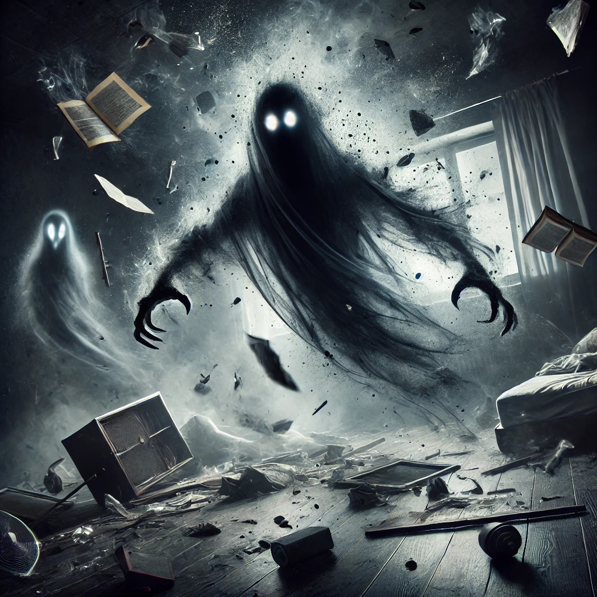
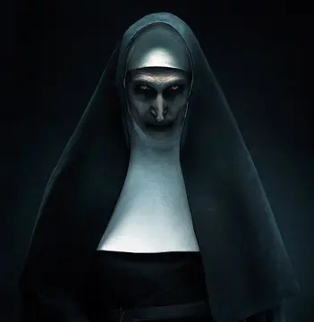
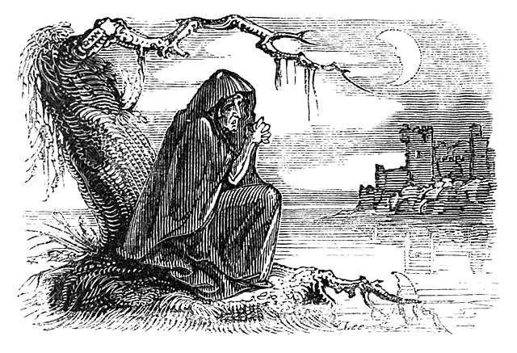
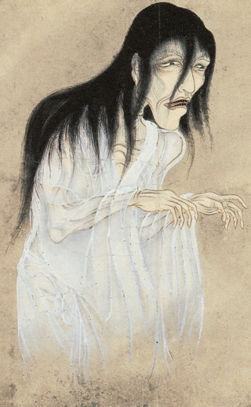

Âme d'un défunt qui erre sur Terre, souvent attachée à un lieu ou une personne. Généralement passif, il peut apparaître sous forme translucide ou brumeuse.
Poltergeist

Esprit turbulent connu pour causer des perturbations physiques comme des objets qui bougent, des bruits inexpliqués et des phénomènes violents.
Démon

Entité maléfique souvent associée aux enfers ou à des forces obscures. Il est réputé pour posséder des individus, semer la terreur et influencer les humains négativement.
Banshee

Esprit féminin issu du folklore irlandais, connu pour son cri perçant annonçant la mort imminente d’une personne.
Yurei

Fantôme du folklore japonais, souvent représenté avec un kimono blanc et de longs cheveux noirs flottants. Ce sont généralement des âmes tourmentées cherchant à résoudre une injustice.